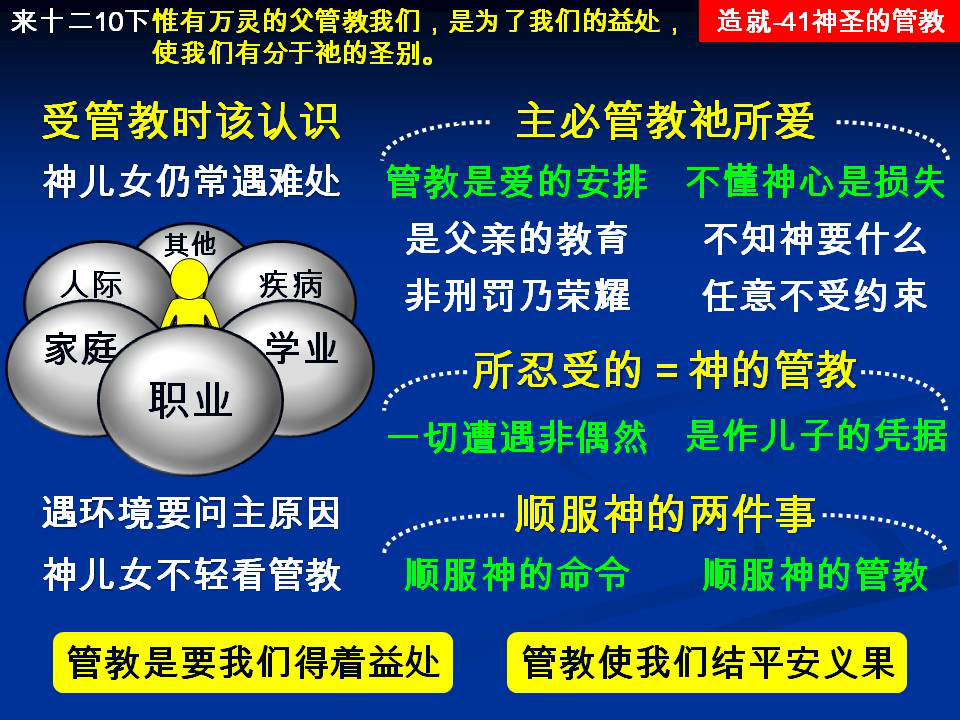

诗歌：127首、227首
重要经文：
希伯来书十二章5~7节：你们竟全然忘了那劝勉的话，就是对你们如同对儿子所讲论的，说，“我儿，你不可轻看主的管教，被祂责备的时候，也不可灰心；因为主所爱的，祂必管教，又鞭打凡所收纳的儿子 。”
希伯来书十二章11~12节：一切的管教，当时固然不觉得喜乐，反觉得愁苦；后来却给那借此受过操练的人，结出平安的义果。所以你们要把下垂的手，瘫弱的膝挺起来；也要为自己的脚把路径修直了，使瘸子不至脱臼，反得医治。
箴言十三章24节：不忍用杖打儿子的，是恨恶他。疼爱儿子的，趁早管教。
纲目要点：
壹 在神管教下的应有的认识：
一 碰见难处要问为什么。
二 神的儿女不应该轻看主的管教。
贰 主所爱的祂必管教：
一 管教乃是爱的安排。
二 不明白管教是一个大损失。
参 所忍受的乃是神的管教。
肆 顺服神的两件事。
伍 管教是要我们得益处。
陆 经练管教就结出平安的果子：
一 要结出平安的果子。
二 平安的果子就是义的果子。
信息选读：
在神管教下的应有的认识
希伯来十二章四节：『你们与罪争斗，还没有抵挡到流血。』在这里使徒对希伯来的信徒说，你们与罪恶相争，虽然受了很多的苦，受了很大的试炼，也碰着了各种的难处，遭遇了许多的逼迫，但总还没有抵挡到流血的地步。这一个，如果和我们的主所受的来比较的话，是差得太多了！本章第二节告诉我们说，主耶稣是轻看羞辱，忍受了十字架的苦难。所以，以信徒的经历来说，比主所经过的是差得太多了！主耶稣是轻看羞辱，忍受十字架的苦难，到了一个流血的地步。信徒们虽然也受了羞辱，也忍受十字架的苦难，但是还没有到流血的地步。
碰见难处要问为什么
一个人作了基督徒，他所要预备遇见的是什么事？我们绝不愿意把一个不正当的盼望，摆在弟兄们面前；乃是要给他们看见，我们将来要碰着许多事，那些事都有神的目的在里面，都有神的意义在里面。我们要遇见许多试炼，我们要遇见许多难处，但那些试炼，那些难处，到底为什么缘故？有什么意义在里面？当主还没有让我们作殉道者之前，无论如何，抵挡罪恶，与罪恶相争，还没有到流血的地步。虽然还没有到流血的地步，但是总是在那里抵挡！到底这一件事的发生，是什么缘故呢？使徒在写这一段圣经的时候，就引旧约箴言的话对我们说，主如果管教我们，我们不可轻看；主如果责备我们，我们也不可灰心。这两个态度，都是信徒该有的。有的人，当他经过困难的时候，当他受苦的时候，当他有神的管教的时候，他看作平常，以为不是重要的事，很轻易的就让神的管教从他身上过去。也有的人，当他碰着主的责备，有主的手加在他身上，他就灰心了，他觉得说，一个基督徒的环境这样困难，作基督徒是太难了。他是盼望说，这一条路是非常顺的，是穿了洁白的细麻衣，很轻松的走在黄金的街道上，走到珍珠的门里头去。
神的儿女不应该轻看主的管教
可是有许多神的儿女，很可能作基督徒作了十年八年，还没有一次重看神的管教，还没有一次在那里说，主是在这里管教我，主是在这里对付我，主是要把我对付到一个地步，打到一个地步，打成功一个器皿，雕刻成功一个器皿。他没有看见神的打，神的对付，神的雕刻的目的，他就是这样马马虎虎的过去。今天碰着一件事，他就是无所谓的让它过去；明天再碰见一件事，他也不知道主的目的到底在那里，也就随便让它过去。好像说，神是一位没有目的的神，是随便给人苦受的。所以，请你们记得，神的儿女，第一个态度就是应该学习重看神的管教。一有遭遇，第一个问题就要问：『这是什么意思？』『为什么要这样作？』我们要学习重看，不轻看。轻看就是马虎，轻看就是说神要怎么作，就怎么作，自己莫名其妙的、迷迷糊糊的过去就是了。
不明白管教是一个大损失
我可以很有把握的说这话，每一个神的儿女，神都要叫他在某一件事情上荣耀祂。所有神的儿女，都要荣耀祂。不过，各人不一样，有的人是这样荣耀祂，有的人是那样荣耀祂。我们在各种各样的情形里荣耀神，就叫神得着完全的荣耀。每一个人，有他某一个部分，有他某一个特点，神要造成某一种的品格，叫他在那里荣耀神。所以，每一个人，有神管教的手在他身上，为要成功神的事。绝没有一个神的儿女，神在他身上没有管教的手。
所以，神的儿女如果不明白神的管教，实在是一个大损失。我顶直的说，有许多人，活在神面前多少年，他是糊涂的人，是没有路的人。他不知道主在他身上要作的是什么事。他是任意而行，不受约束，好像一个人在旷野里乱跑，是没有目的地的。
一切遭遇不是偶然
所以今天的问题就是说，如果一个人给我不好看的脸色，我是什么种的反应？如果这一个不好看的脸色，是神管教我，我是什么种的反应？如果因为人的记性不好，误了我的事，我要怎样对待他？如果这一个人记性不好，乃是神的管教，我要怎样对待他？如果我这一次的生病，是我受了传染，我要怎样对待它？如果事情不好，乃是命运不济，我怎么说？如果事情不好，乃是神的管教，我怎么说？弟兄姊妹，这一切发生极大的分别！当你在环境里碰着各种各样的事的时候，你以为说，这不过是我的遭遇，你在那里就有一个态度。你如果看见是神的管教，你必定又是一种的态度。
管教乃是作儿子的凭据
我曾看见五、六个孩子在一起大大玩耍，弄得全身都是泥。有一个作母亲的来了，把自己的三个孩子，每一个打几下手掌，不许他们再弄得这样脏。打完了之后，有一个孩子就问：『为什么不打他们？』作母亲的回答说，『他们不是我的儿子。』你们看，没有一个母亲，要管教别人家的孩子。请我们记得，神若不打我们，就坏了！没有管教的人，都是私生子，不是自己的儿子！
神的管教是要我们得益处
从信主起头，神一直管教我们，只有一个目的，就是要我们也有祂的圣洁，和祂的性情有分，和祂的品格有分。圣经里所说的圣洁，有好几种。希伯来书里所说的圣洁， 是专指着神的品格说的。譬如基督成为我们的圣洁，是另外一件事。譬如在基督里成圣，也是另外一件事。这里所说的圣洁是雕刻出来的，不是赐给的。这就是我们多年来一直注重的两个字－组织。这就是说，神把东西逐渐逐渐作到我们里面来，神把东西逐渐逐渐组织到我们里面来。这里所说的圣洁，乃是借着祂的管教，借着祂的鞭打，借着祂天天在我们里面所作的，而组织成功的圣洁。那么多的管教，那么多的工作，目的就是要我们在祂的圣洁上有分。（摘自初信造就第四十一篇）
课程复习：
一 在神管教下的应有的认识是什么？
二 为什么神的儿女不应该轻看主的管教？
三 为什么不明白管教是一个大损失？
四 请说明神的管教乃是作儿子的凭据？
五 神的管教是要我们得着什么益处？
辅助图表：
